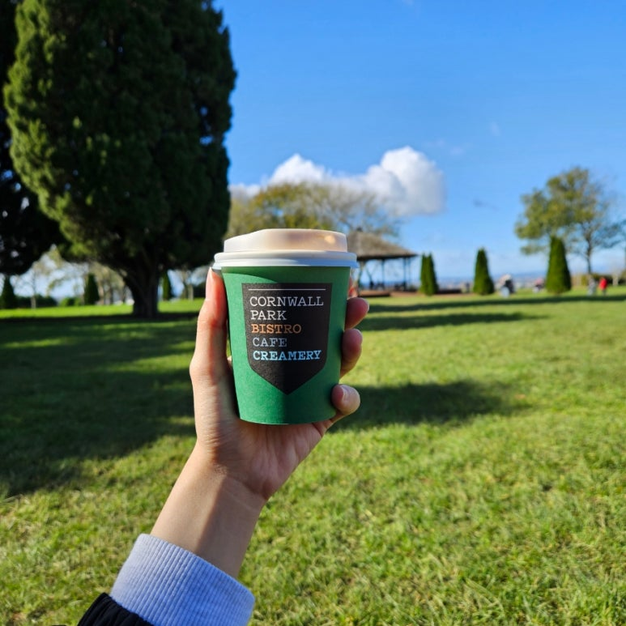
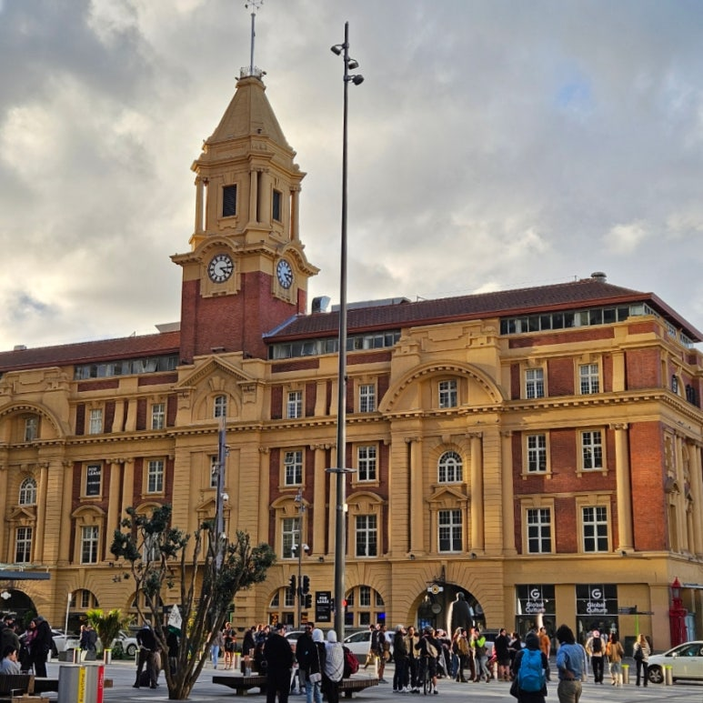
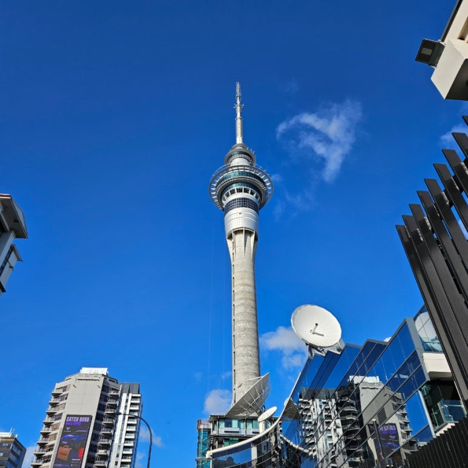
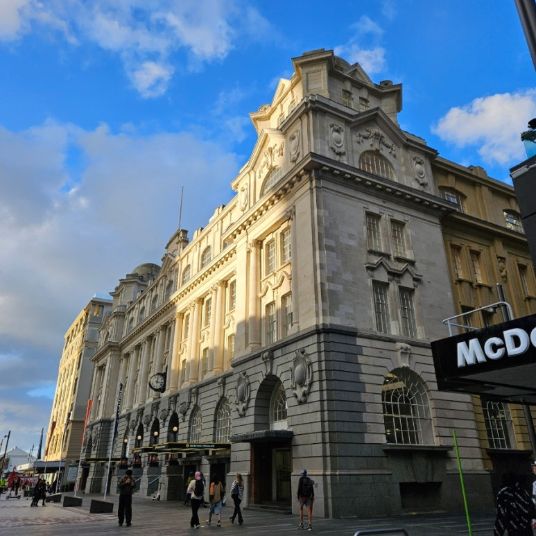

🌏 나의 여행 앨범 🎵
뉴질랜드 오클랜드
에서 한 달간 어학연수를 하며 담아온 사진과 영상입니다.
이 브라우저는 audio 태그를 지원하지 않습니다.
📷 여행 사진

콘월 파크 (2026.06.21)

페리 빌딩 (2026.06.23)
와이헤케 섬 (2026.06.27)

스카이 타워 (2026.07.02)

브리토마트 기차역 (2026.07.12)
🎬 나의 여행 브이로그
이 브라우저는 video 태그를 지원하지 않습니다.
와이헤케 섬으로 가는 페리 ⛴️